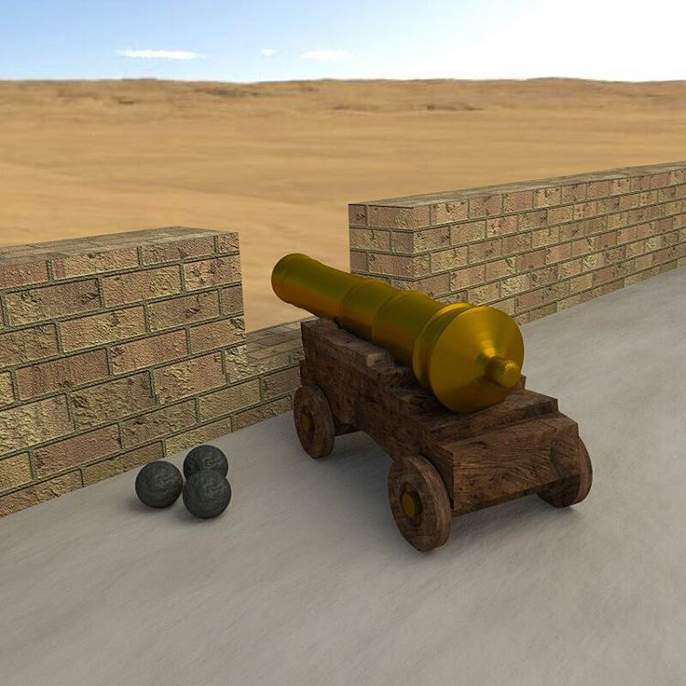
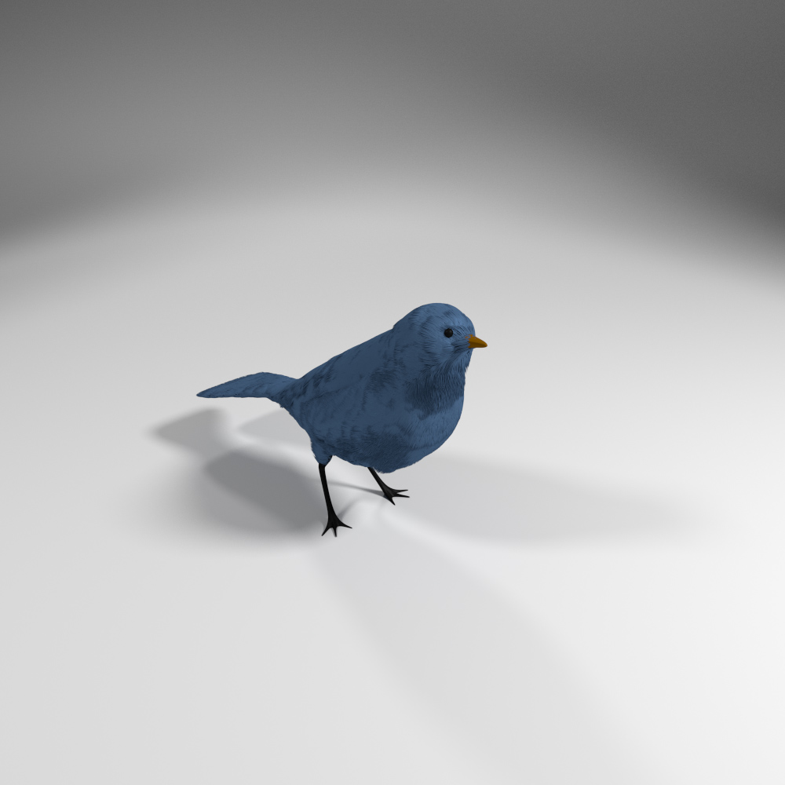

Rendering & 3D Printing





About
Engineer and former startup founder. Previously lead UI
developer at ExtraHop Networks and co-founder/CTO at
Athleon.com, a venture-backed startup.
Currently building new companies at
Pioneer Square Labs.
Selected Experience
Principal Engineer, Project Lead
Pioneer Square Labs
Pioneer Square Labs is a Seattle-based studio that creates
and launches technology startups.
Our backers include 13 of the world's top venture firms and
over 50 angels from the Pacific Northwest, Silicon Valley,
and around the country.
My role includes
evaluating prospective business ideas, early-stage product
development, and sales support.
Principal Engineer, Team Lead
ExtraHop Networks
Responsible for building
and supporting the ExtraHop product UI. Worked closely with
the CEO and business stakeholders to develop requirements
and define the strategic direction of the product.
Led an eight-developer team, driving the technical vision,
architecture, and implementation of a web-based analytics
platform. Established a wireframe-driven UX design process,
triaged and prioritized features, and managed our outside
graphics firm.
Wrote several major product features, including the data
analytics engine, real-time metric search, and HTML5-Canvas
based visualizations. Python, JavaScript, Angular,
PostgreSQL.
Senior Engineer, Team Lead
Marchex
Senior engineer and team lead, responsible for building and
testing Marchex's core VoIP platform. Led a team of five
engineers (dev+qa) to sunset and replace several legacy
services, driving the technical vision, and coordinating
feature development, testing, and the migration of customers
to the new system.
I was personally responsible for writing the company's
next-gen SIP router, and contributed to its Asterisk-based
call handling platform. Perl, Oracle, Redis.
Co-founder and CTO
Athleon
Raised over half a million in angel and venture financing,
then recruited and led a four-person engineering team to
build a product serving 150,000 coaches and athletes.
Managed budget, product vision, and technical roadmap.
Acquired 2012.
Single-handedly built alpha version of product in Perl,
JavaScript, and Flex. Focus on A/B Testing, UX design, and
conversion optimization.
Reading List